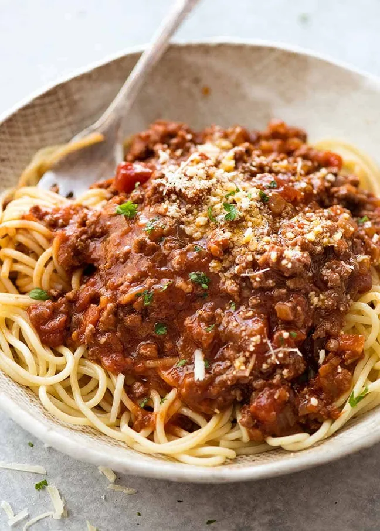

Home
Spaghetti Bolognaise

Description
This best ever spaghetti bolognaise is super easy and a true Italian classic with a meaty, chilli sauce. This pasta bolognaise recipe is sure to become a family favourite.
Ingredients (Serves 2)
- 250g Beef Mince
- 180g Spaghetti
- 450g Dolmio Smooth Tomato Sauce
- 1 Beef Stock Cube
- Chilli Powder
- Mixed Herbs
- Pink Himayalan Salt
Method
- Bring a large pan of water to the boil, then salt well and stir. Add the spaghetti, stir again and cook until al dente.
- While the spaghetti is cooking, add the ground meat in a large skillet (or a pan), season with salt and cook until the meat is no longer pink.
- Once the meat is no longer pink, add in your jar of Dolmio sauce and stir.
- Add in your beef stock cube and season further with mixed herbs and chilli powder.
- Simmer your mince and sauce for a further 5-10 minutes.
- Drain your spagetti, serve into a pasta bowl and then add your beef on top.
- Top with grated cheese if you wish.